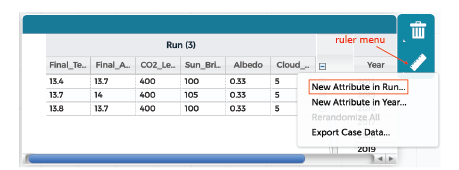

Watch the short movie below to learn about data tables in CODAP.
Some columns are fixed because the values come from the model or sensor. You cannot change fixed columns.
New columns can accept measurements (or formulas). Sometimes they are already made for you, or you can add your own.

There are four tables pre-loaded into the CODAP document. We'll mostly be using the FanGraphs Hitting Leaderboard.
Back: Fun with Baseball Data
Next: Vocabulary